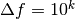
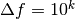

Black-Box Optimization Benchmarking Procedure¶
COCO has been used in several workshops during the GECCO conference since 2009 (BBOB-2009).
For these workshops, a testbed of 24 noiseless functions and another of 30 noisy functions are provided. Descriptions of the functions can be found at http://coco.gforge.inria.fr/doku.php?id=downloads
This section describes the setup of the experimental procedures and their rationales, giving the guidelines to produce an article for a GECCO-BBOB workshop using COCO.
Symbols, Constants, and Parameters¶
For the workshops, some constants were set:
- is search space dimensionalities used for all functions.
- is the number of trials for each single setup, i.e. each function and dimensionality. The performance is evaluated over all trials.
- precision to reach, that is, a difference to the smallest possible function value .
- is target function value to reach for different values. The final, smallest considered target function value is , but also larger values for are evaluated.

The runs are conducted on different instances of the functions.
Rationale for the Choice of Ntrial = 15¶
All functions can be instantiated in different “versions” (with different location of the global optimum and different optimal function value). Overall runs are conducted on different instantiations (in the 2009 setup each instance was repeated three times). The parameter , the overall number of trials on each function/dimension pair, determines the minimal measurable success rate and influences the overall necessary CPU time. Compared to a standard setup for testing stochastic search procedures, we have chosen a small value, . Consequently, within the same CPU-time budget, single trials can be longer and conduct more function evaluations (until is reached). If an algorithm terminates before is reached, longer trials can simply be achieved by independent multistarts. Because these multistarts are conducted within each trial, more sophisticated restart strategies are feasible. Within-trial multistarts never impair the used performance measures and are encouraged. Finally, 15 trials are sufficient to make relevant performance differences statistically significant. [1]
| [1] | If the number of trials is chosen much larger, small and therefore irrelevant performance differences become statistically significant. |
Rationale for the Choice of ftarget¶
The initial search domain and the target function value are an essential part of the benchmark function definition. Different target function values might lead to different characteristics of the problem to be solved, besides that larger target values are invariably less difficult to reach. Functions might be easy to solve up to a function value of 1 and become intricate for smaller target values. We take records for a larger number of predefined target values, defined relative to the known optimal function value and in principle unbounded from above. The chosen value for the final (smallest) is somewhat arbitrary. Reasonable values can change by simple modifications in the function definition. In order to safely prevent numerical precision problems, the final target is .
Benchmarking Experiment¶
The real-parameter search algorithm under consideration is run on a testbed of benchmark functions to be minimized (the implementation of the functions is provided in C/C++, Java, MATLAB/Octave and Python). On each function and for each dimensionality trials are carried out (see also Rationale for the Choice of Ntrial = 15). Different function instances can be used.
The exampleexperiment.* code template is provided to run this experiment. For BBOB-2012, the instances are 1 to 5 and 21 to 30.
Input to the Algorithm and Initialization¶
An algorithm can use the following input:
- the search space dimensionality
- the search domain; all functions of BBOB are defined everywhere in and have their global optimum in . Most BBOB functions have their global optimum in the range which can be a reasonable setting for initial solutions.
- indication of the testbed under consideration, i.e. different algorithms and/or parameter settings can be used for the noise-free and the noisy testbed.
- the final target precision delta-value
(see above), in order to implement effective termination and restart mechanisms (which should also prevent early termination)
- the target function value , however provided only for conclusive (final) termination of trials, in order to reduce the overall CPU requirements. The target function value must not be used as algorithm input otherwise (not even to trigger within-trial restarts).
Based on these input parameters, the parameter setting and initialization of the algorithm is entirely left to the user. As a consequence, the setting shall be identical for all benchmark functions of one testbed (the function identifier or any known characteristics of the function are, for natural reasons, not allowed as input to the algorithm, see also Section Parameter Setting and Tuning of Algorithms).
Termination Criteria and Restarts¶
Algorithms with any budget of function evaluations, small or large, are considered in the analysis of the results. Exploiting a larger number of function evaluations increases the chance to achieve better function values or even to solve the function up to the final [2]. In any case, a trial can be conclusively terminated if is reached. Otherwise, the choice of termination is a relevant part of the algorithm: the termination of unsuccessful trials affects the performance. To exploit a large number of function evaluations effectively, we suggest considering a multistart procedure, which relies on an interim termination of the algorithm.
Independent restarts do not change the main performance measure, expected running time (, see Appendix Expected Running Time) to hit a given target. Independent restarts mainly improve the reliability and “visibility” of the measured value. For example, using a fast algorithm with a small success probability, say 5% (or 1%), chances are that not a single of 15 trials is successful. With 10 (or 90) independent restarts, the success probability will increase to 40% and the performance will become visible. At least four to five (here out of 15) successful trials are desirable to accomplish a stable performance measurement. This reasoning remains valid for any target function value (different values are considered in the evaluation).
Restarts either from a previous solution, or with a different parameter setup, for example with different (increasing) population sizes, might be considered, as it has been applied quite successful [Auger:2005a] [Harik:1999].
Choosing different setups mimics what might be done in practice. All restart mechanisms are finally considered as part of the algorithm under consideration.
| [2] | The easiest functions of BBOB can be solved in less than function evaluations, while on the most difficult functions a budget of more than function evaluations to reach the final is expected. |
Time Complexity Experiment¶
In order to get a rough measurement of the time complexity of the algorithm, the overall CPU time is measured when running the algorithm on (Rosenbrock function) of the BBOB testbed for at least a few tens of seconds (and at least a few iterations). The chosen setup should reflect a “realistic average scenario”. If another termination criterion is reached, the algorithm is restarted (like for a new trial). The CPU-time per function evaluation is reported for each dimension. The time complexity experiment is conducted in the same dimensions as the benchmarking experiment. The chosen setup, coding language, compiler and computational architecture for conducting these experiments are described.
The exampletiming.* code template is provided to run this experiment. For CPU-inexpensive algorithms the timing might mainly reflect the time spent in function fgeneric.
Parameter Setting and Tuning of Algorithms¶
The algorithm and the used parameter setting for the algorithm should be described thoroughly. Any tuning of parameters to the testbed should be described and the approximate number of tested parameter settings should be given.
On all functions the very same parameter setting must be used (which might well depend on the dimensionality, see Section Input to the Algorithm and Initialization). That means, a priori use of function-dependent parameter settings is prohibited (since 2012). In other words, the function ID or any function characteristics (like
separability, multi-modality, ...) cannot be considered as input parameter to the algorithm. Instead, we encourage benchmarking different
parameter settings as “different algorithms” on the entire testbed. In order
to combine different parameter settings, one might use either multiple runs
with different parameters (for example restarts, see also
Section Termination Criteria and Restarts), or use (other) probing techniques for identifying
function-wise the appropriate parameters online. The underlying assumption in
this experimental setup is that also in practice we do not know in advance
whether the algorithm will face  or , a unimodal or a
multimodal function... therefore we cannot adjust algorithm parameters a
priori [3].
or , a unimodal or a
multimodal function... therefore we cannot adjust algorithm parameters a
priori [3].
| [3] | In contrast to most other function properties, the property of having noise can usually be verified easily. Therefore, for noisy functions a second testbed has been defined. The two testbeds can be approached a priori with different parameter settings or different algorithms. |
Performance Measurement¶
We advocate performance measures that are:
- quantitative, ideally with a ratio scale (opposed to interval or ordinal scale) [4] and with a wide variation (i.e., for example, with values ranging not only between 0.98 and 1.0)
- well-interpretable, in particular by having a meaning and semantics attached to the numbers
- relevant with respect to the “real world”
- as simple as possible
For these reasons we measure “running times” to reach a target function value, denoted as fixed-target scenario in the following.
Fixed-Cost versus Fixed-Target Scenario¶
Two different approaches for collecting data and making measurements from experiments are schematically depicted in Figure Horizontal vs Vertical View.
{kind=link}
Horizontal vs Vertical View
- Fixed-cost scenario (vertical cuts)
- Fixing a number of function evaluations (this corresponds to fixing a cost) and measuring the function values reached for this given number of function evaluations. Fixing search costs can be pictured as drawing a vertical line on the convergence graphs (see Figure Horizontal vs Vertical View where the line is depicted in red).
- Fixed-target scenario (horizontal cuts)
- Fixing a target function value and measuring the number of function evaluations needed to reach this target function value. Fixing a target can be pictured as drawing a horizontal line in the convergence graphs (Figure Horizontal vs Vertical View where the line is depicted in blue).
It is often argued that the fixed-cost approach is close to what is needed for real word applications where the total number of function evaluations is limited. On the other hand, also a minimum target requirement needs to be achieved in real world applications, for example, getting (noticeably) better than the currently available best solution or than a competitor.
For benchmarking algorithms we prefer the fixed-target scenario over the fixed-cost scenario since it gives quantitative and interpretable data: the fixed-target scenario (horizontal cut) measures a time needed to reach a target function value and allows therefore conclusions of the type: Algorithm A is two/ten/hundred times faster than Algorithm B in solving this problem (i.e. reaching the given target function value). The fixed-cost scenario (vertical cut) does not give quantitatively interpretable data: there is no interpretable meaning to the fact that Algorithm A reaches a function value that is two/ten/hundred times smaller than the one reached by Algorithm B, mainly because there is no a priori evidence how much more difficult it is to reach a function value that is two/ten/hundred times smaller. This, indeed, largely depends on the specific function and on the specific function value reached. Furthermore, for algorithms that are invariant under certain transformations of the function value (for example under order-preserving transformations as algorithms based on comparisons like DE, ES, PSO), fixed-target measures can be made invariant under these transformations by simply choosing different target values while fixed-cost measures require the transformation of all resulting data.
Expected Running Time¶
We use the expected running time (, introduced in [Price:1997] as ENES and analyzed in [Auger:2005b] as success performance) as most prominent performance measure. The Expected Running Time is defined as the expected number of function evaluations to reach a target function value for the first time. For a non-zero success rate , the computes to:
where the running times and denote the average number of function evaluations for successful and unsuccessful trials, respectively (zero for none respective trial), and denotes the fraction of successful trials. Successful trials are those that reached ; evaluations after was reached are disregarded. The is the number of function evaluations conducted in all trials, while the best function value was not smaller than during the trial, i.e. the sum over all trials of:
The denotes the number of successful trials. estimates the expected running time to reach [Auger:2005b], as a function of . In particular, and depend on the value. Whenever not all trials were successful, ERT also depends (strongly) on the termination criteria of the algorithm.
| [4] | Wikipedia gives a reasonable introduction to scale types. |
Bootstrapping¶
The computes a single measurement from a data sample set (in our case from optimization runs). Bootstrapping [Efron:1993] can provide a dispersion measure for this aggregated measurement: here, a “single data sample” is derived from the original data by repeatedly drawing single trials with replacement until a successful trial is drawn. The running time of the single sample is computed as the sum of function evaluations in the drawn trials (for the last trial up to where the target function value is reached) [Auger:2005b] [Auger:2009]. The distribution of the bootstrapped running times is, besides its displacement, a good approximation of the true distribution. We provide some percentiles of the bootstrapped distribution.
Empirical Cumulative Distribution Functions¶
We exploit the “horizontal and vertical” viewpoints introduced in the last Section Fixed-Cost versus Fixed-Target Scenario. In Figure ECDF we plot the ECDF [5] of the intersection point values (stars in Figure Horizontal vs Vertical View) for 450 trials.
| [5] | The empirical (cumulative) distribution function
is defined for a given set of real-valued data
 , such that equals the fraction of elements in
which are smaller than , such that equals the fraction of elements in
which are smaller than  . The function . The function  is
monotonous and a lossless representation of the (unordered) set . is
monotonous and a lossless representation of the (unordered) set . |
{kind=link}
ECDF
 , to fall below
with , where
is the first value in the legend. Data for algorithms
submitted for BBOB 2009 and are represented in the
background in light brown. Right subplot: ECDF of the best achieved
precision divided by 10k (thick red and upper left
lines in continuation of the left subplot), and best achieved precision
divided by 10-8 for running times of , ,
, ... function evaluations (from the rightmost
line to the left cycling through black-cyan-magenta-black).
, to fall below
with , where
is the first value in the legend. Data for algorithms
submitted for BBOB 2009 and are represented in the
background in light brown. Right subplot: ECDF of the best achieved
precision divided by 10k (thick red and upper left
lines in continuation of the left subplot), and best achieved precision
divided by 10-8 for running times of , ,
, ... function evaluations (from the rightmost
line to the left cycling through black-cyan-magenta-black).A cutting line in Figure Horizontal vs Vertical View corresponds to a
“data” line in Figure ECDF, where 450 (30 x 15) convergence graphs
are evaluated. For example, the thick red graph in Figure ECDF shows
on the left the distribution of the running length (number of function
evaluations) [Hoos:1998] for reaching precision
(horizontal cut). The graph continues on the right
as a vertical cut for the maximum number of function evaluations, showing the
distribution of the best achieved values, divided by 10-8. Run length distributions are shown for different target precisions
on the left (by moving the horizontal cutting line up- or
downwards). Precision distributions are shown for different fixed number of
function evaluations on the right. Graphs never cross each other. The
 -value at the transition between left and right subplot corresponds to
the success probability. In the example, just under 50% for precision 10-8 (thick red) and just above 70% for precision 10-1 (cyan).
-value at the transition between left and right subplot corresponds to
the success probability. In the example, just under 50% for precision 10-8 (thick red) and just above 70% for precision 10-1 (cyan).
| [Auger:2005a] | A Auger and N Hansen. A restart CMA evolution strategy with increasing population size. In Proceedings of the IEEE Congress on Evolutionary Computation (CEC 2005), pages 1769–1776. IEEE Press, 2005. |
| [Auger:2005b] | (1, 2, 3) A. Auger and N. Hansen. Performance evaluation of an advanced local search evolutionary algorithm. In Proceedings of the IEEE Congress on Evolutionary Computation (CEC 2005), pages 1777–1784, 2005. |
| [Auger:2009] | Anne Auger and Raymond Ros. Benchmarking the pure random search on the BBOB-2009 testbed. In Franz Rothlauf, editor, GECCO (Companion), pages 2479–2484. ACM, 2009. |
| [Efron:1993] | B. Efron and R. Tibshirani. An introduction to the bootstrap. Chapman & Hall/CRC, 1993. |
| [Harik:1999] | G.R. Harik and F.G. Lobo. A parameter-less genetic algorithm. In Proceedings of the Genetic and Evolutionary Computation Conference (GECCO), volume 1, pages 258–265. ACM, 1999. |
| [Hoos:1998] | H.H. Hoos and T. Stützle. Evaluating Las Vegas algorithms—pitfalls and remedies. In Proceedings of the Fourteenth Conference on Uncertainty in Artificial Intelligence (UAI-98), pages 238–245, 1998. |
| [Price:1997] | K. Price. Differential evolution vs. the functions of the second ICEO. In Proceedings of the IEEE International Congress on Evolutionary Computation, pages 153–157, 1997. |